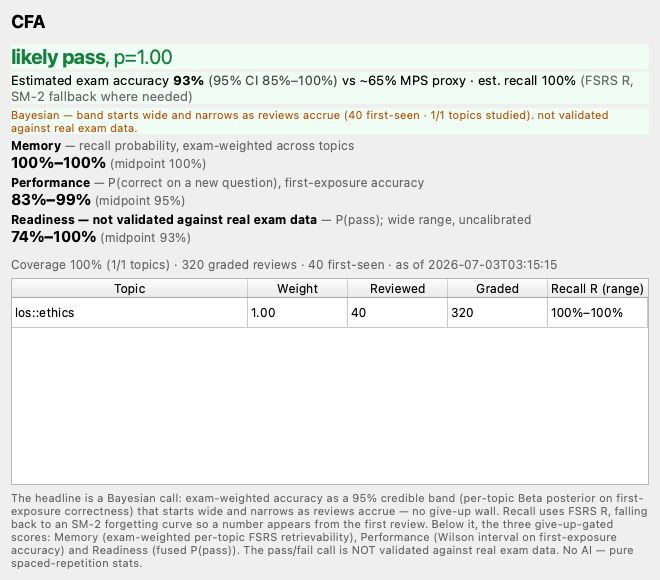
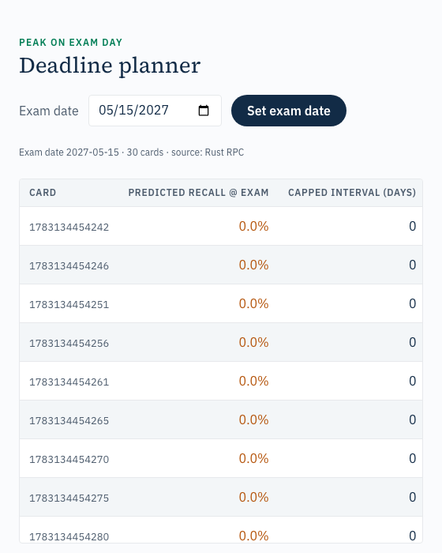
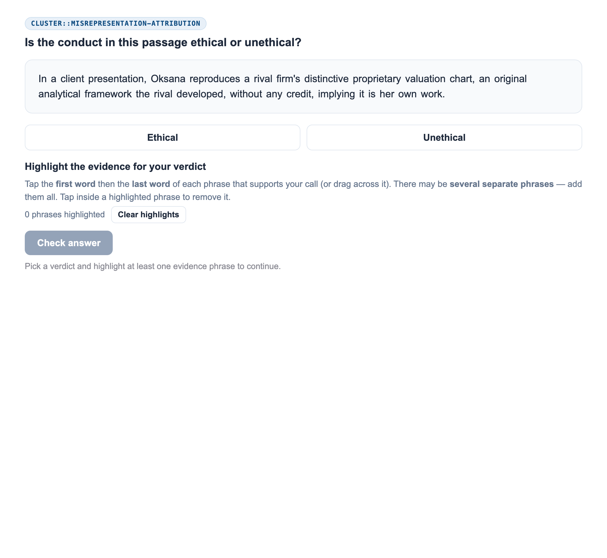
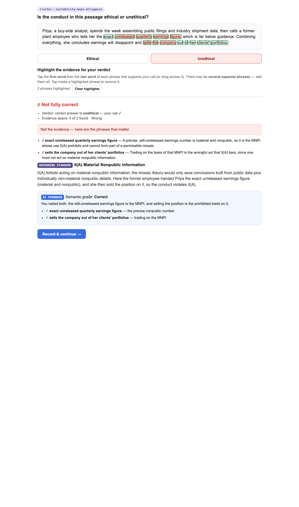
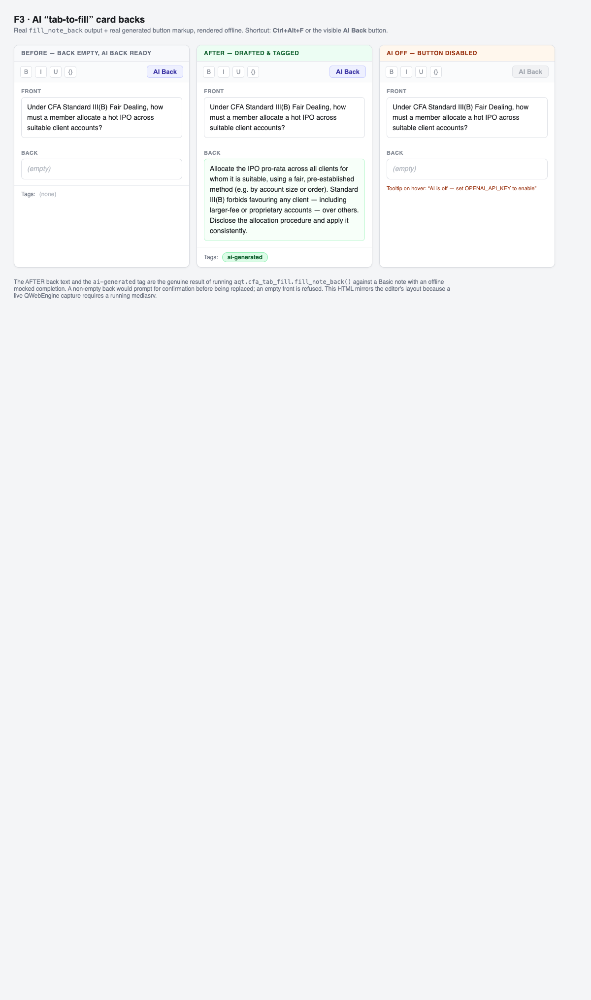
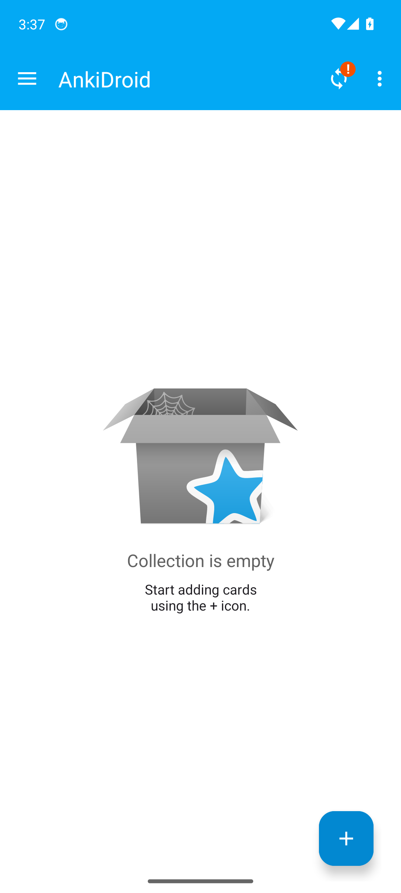
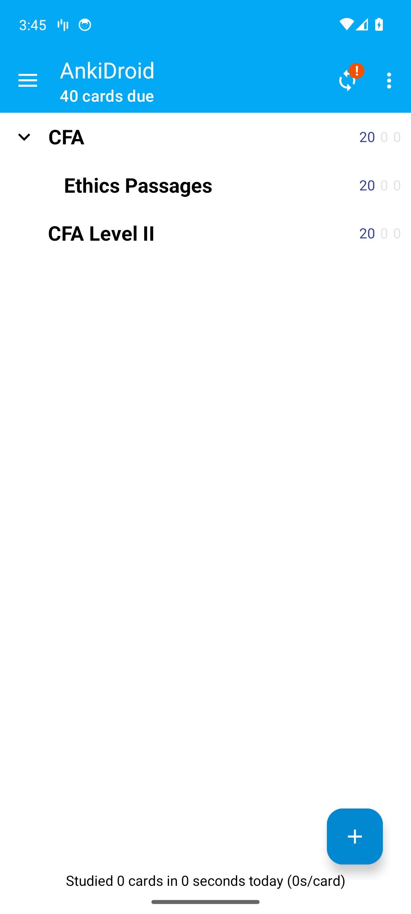
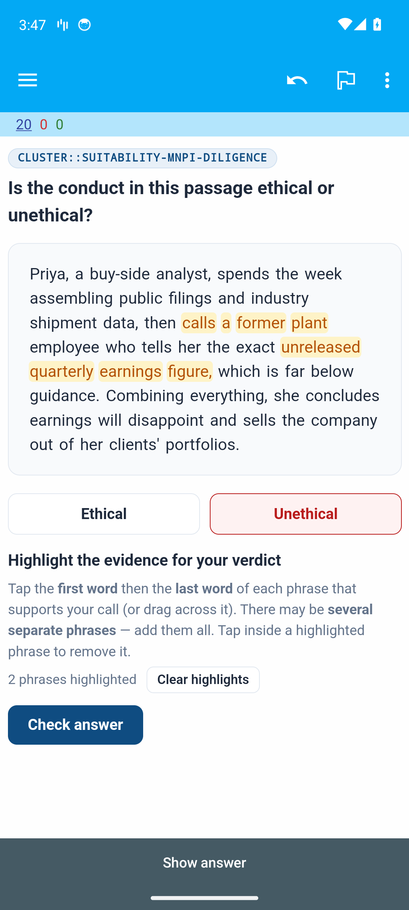

F9 Demo — every shipped surface, one contact sheet
Real rendered / on-device screenshots (AI-off default). 203 py/qt + 21 Rust tests green · reachability PASS.
F4 · SCORING
Bayesian Exam Readiness — 95% credible band + pass/fail call

F0b · DESKTOP
Peak-on-Exam-Day date picker (persists exam config)

F1/F5 · ETHICS
One-passage multi-span card, calm finance styling

F2 · AI GRADING
Semantic highlight grade + AI feedback (fallback-safe)

F3 · AI EDITOR
Tab-to-fill card backs (before / after / AI-off)

F6 · ANDROID
Fork Rust engine running on-device

F7 · ANDROID
Bundled CFA decks auto-imported on device

F7 · ANDROID
Ethics multi-span highlight working on device

Every AI feature works fully with AI OFF via a deterministic fallback · scoring carries a standing "not validated against real exam data" caveat · mobile = shared Rust engine + synced content (see docs/cfa/PLATFORM-MATRIX.md).